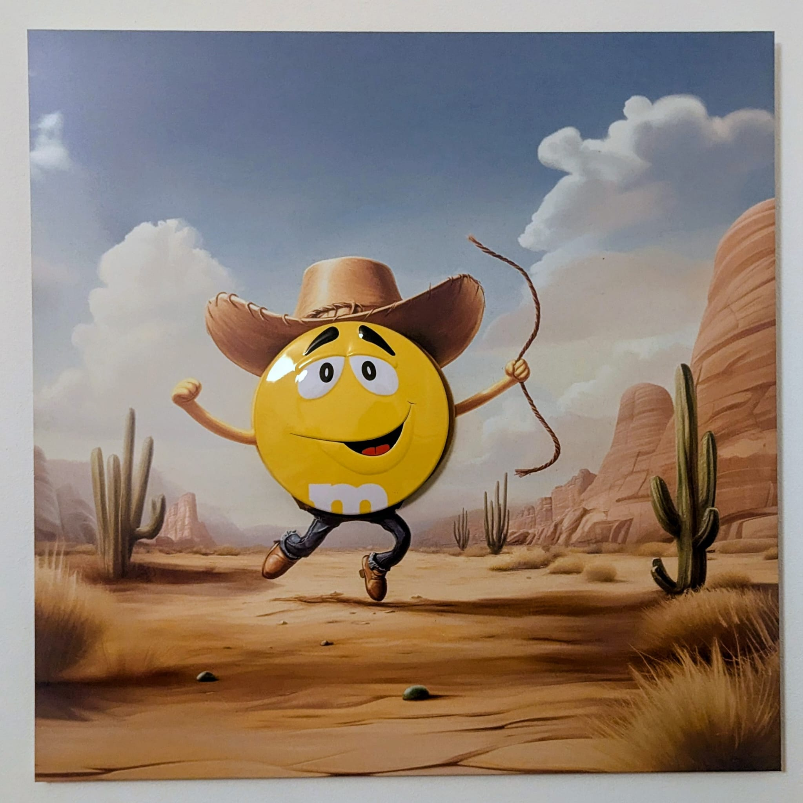
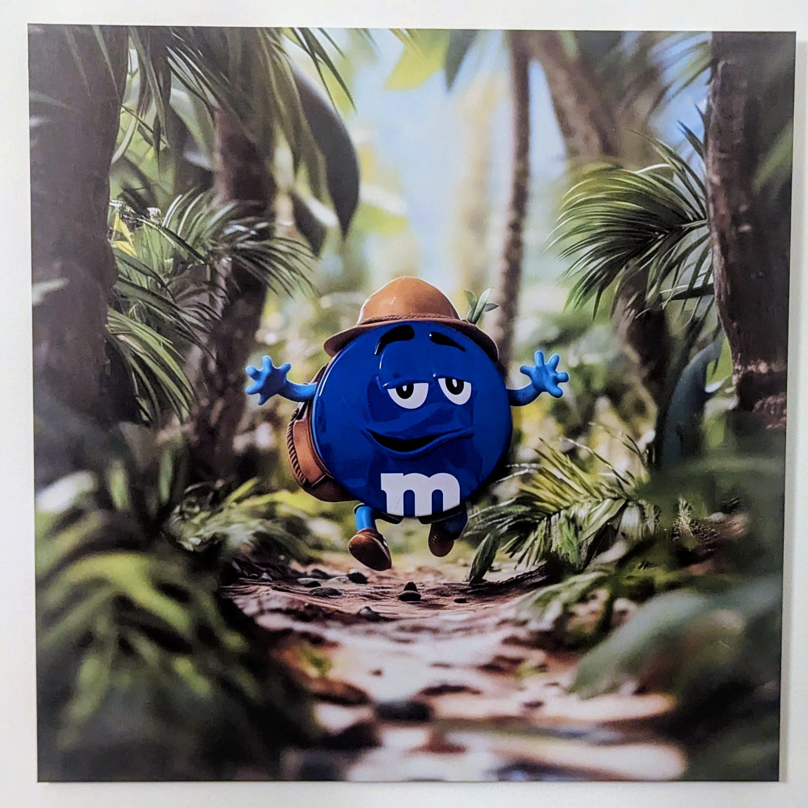
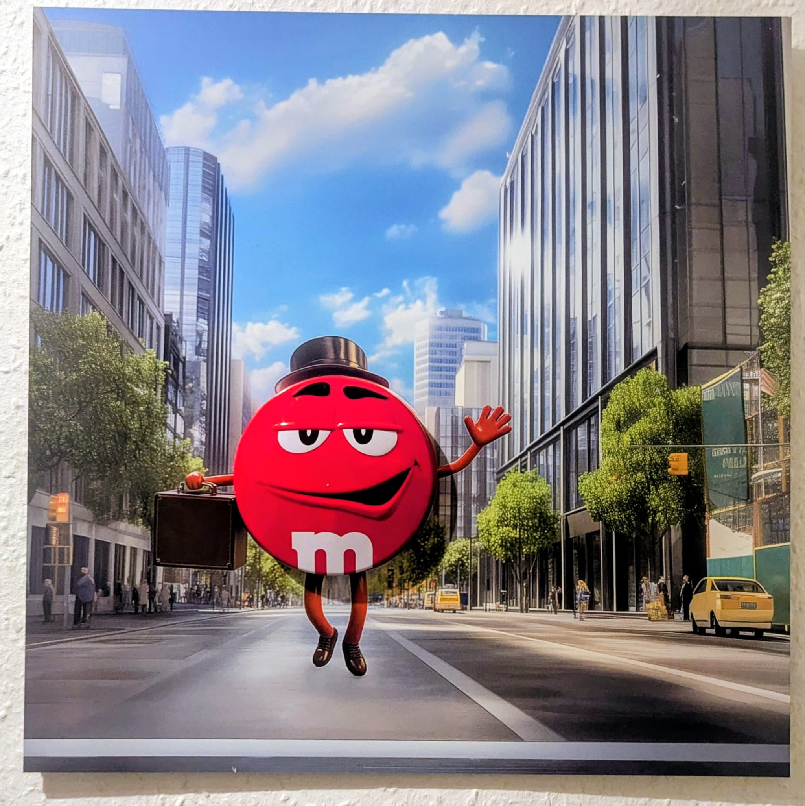
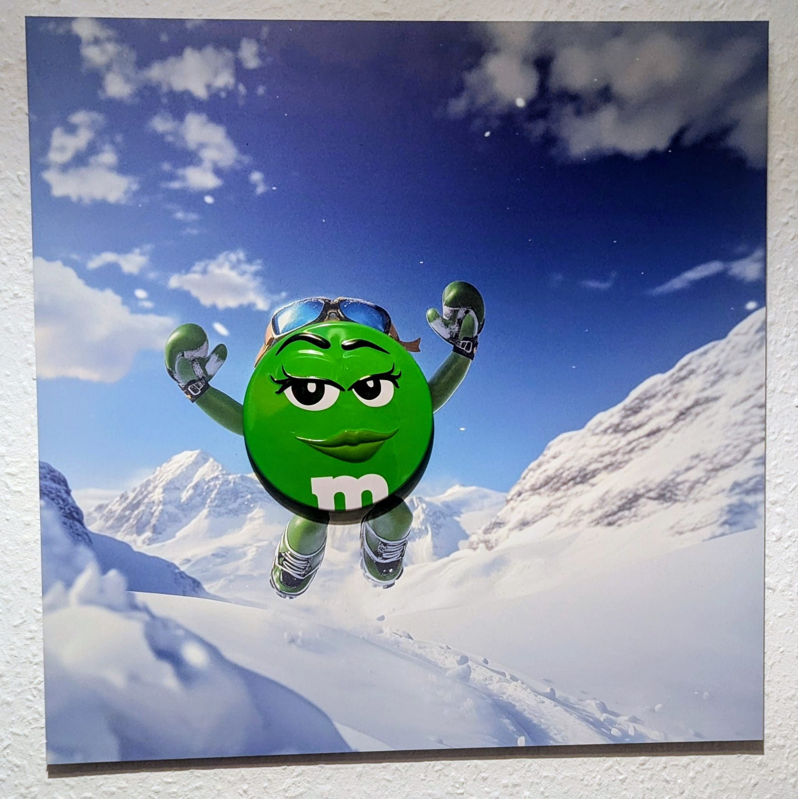
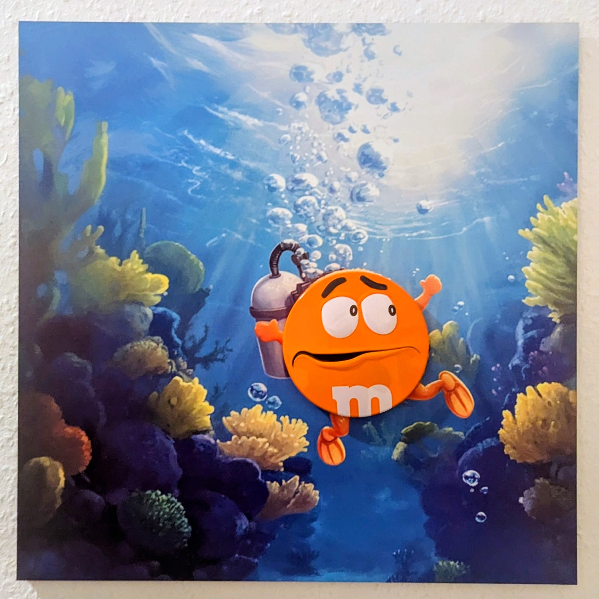

✕
Œuvres
Une série d'impressions sur aluminium — images générées par IA, intégrant la boîte M&M's en relief pour créer cinq paysages habitables.
Cette première série interroge la tension fondamentale entre l'artifice du packaging industriel et la brutalité organique des grands paysages. Des images construites par intelligence artificielle, dans lesquelles la boîte M&M's est intégrée physiquement — en relief — sur un support aluminium. L'objet de consommation n'est plus représenté : il est présent. Chaque personnage — jaune, rouge, bleu, vert, orange — traverse un environnement qui le dépasse, l'absorbe, ou l'effraye. Chacun à sa manière.

Il a le pas incertain de celui qui croit savoir où il va. Le lasso — pas entier, juste assez pour y croire — pend à sa main comme un espoir trop léger pour cette chaleur. Le Jaune dans le désert, c'est la naïveté qui affronte l'infini sans le savoir : jean, chapeau de cowboy, l'attirail de la conquête porté par quelqu'un qui n'a probablement jamais rien conquis. Et pourtant il avance. Ce déséquilibre entre l'équipement et la situation — entre la posture et la réalité — est peut-être la définition exacte du courage.

Il court vers nous. Mais vient-il d'être retrouvé — ou fuit-il quelque chose ? Après des mois à errer dans la forêt, chapeau d'aventurier vissé sur la tête et sac à dos cabossé, le Bleu surgit de la végétation avec l'énergie du survivant. L'œuvre pose la question fondamentale de toute errance : à quel moment le chemin perdu devient-il le vrai chemin ?

Il ne doute pas. C'est ce qui le rend fascinant — et légèrement insupportable. Le Rouge en ville avance au milieu des gratte-ciel avec la certitude tranquille de celui qui se pense chez lui partout : chapeau melon impeccable, attaché-case à la main, petites chaussures de ville qui claquent sur l'asphalte. L'œuvre interroge la confiance comme construction sociale. Ou peut-être juste comme tempérament.

Elle saute. C'est tout. Dans la neige immaculée, sous un ciel d'une clarté insultante, la Verte saute — lunettes de soleil sur le front, sourire aux lèvres, sans calcul ni pose. Les conditions sont idylliques, elle le sait, et elle en profite sans s'en excuser. Dans un monde qui performe en permanence, l'insouciance pure est peut-être la posture la plus radicale qui soit.

Quelque chose est là, dans les profondeurs. L'Orange le sait. Ses palmes, sa bouteille de plongée, tout son équipement ne lui est d'aucun secours face à ce qu'il ne peut pas nommer. Requin ? Ombre ? Les mystères de l'océan ne se laissent pas inventorier. L'œuvre explore cette zone limite où la préparation cède à l'effroi. On peut être parfaitement équipé et avoir peur quand même. C'est peut-être là sa leçon.
Ces œuvres sont nées d'une impulsion simple : prendre ce qui traîne sur un bureau — une vieille boîte M&M's — et voir ce qu'on peut en faire. Des images générées par IA, une boîte en relief, de l'aluminium. Pas de manifeste, pas de programme. Cinq paysages imaginaires et une boîte de bonbons. Le reste, c'est vous qui l'inventez.